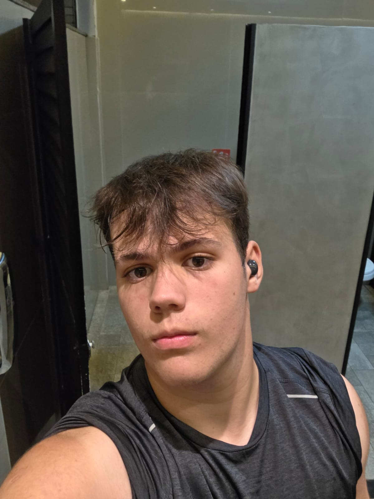

Sobre Mim
Olá! Meu nome é Arthur Wolf, sou estudante do SESI em Florianópolis. Sou natural de Porto Alegre, no Rio Grande do Sul, e me mudei para cá há oito anos. Estudei o ensino fundamental nos colégios Marista e Universo. No meu tempo livre, gosto de ouvir música e praticar esportes, principalmente surfe. Tenho bastante interesse na área musical e estou me dedicando à produção de beats, com planos de seguir carreira como beatmaker. Acredito que a arte é uma forma de expressão importante, e vejo na música uma oportunidade de crescimento pessoal e profissional. Minhas expectativas são de continuar aprendendo e me desenvolvendo, tanto nos estudos quanto na música.